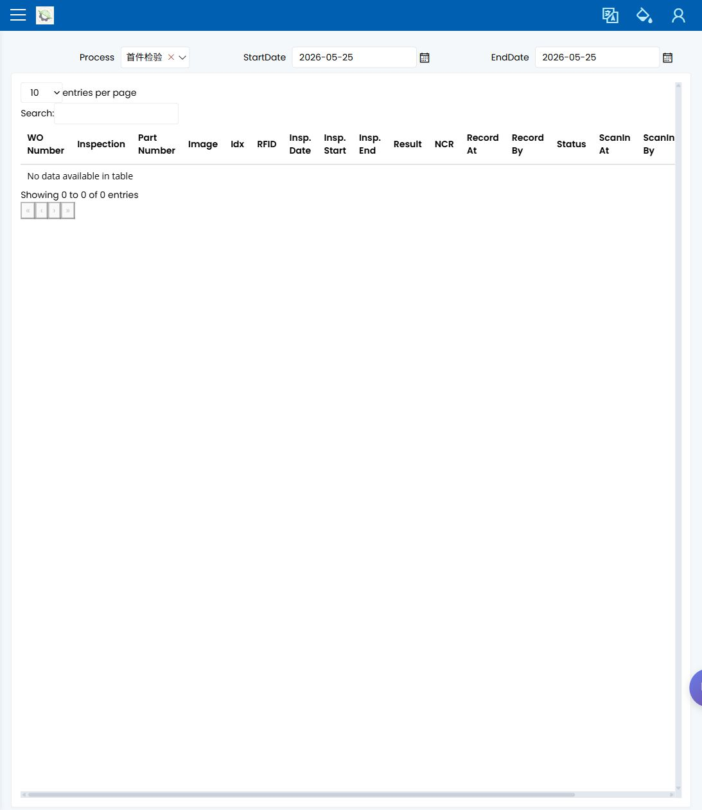

检验记录
English | 中文
Path: Quality / QC / Inspection Records URL: <APP_BASE_URL>/Production/InspectionRecord
页面用途
Inspection Records 用于确认检验作业是否已经保存，以及结果是否支持下一步生产决定。操作员和主管用它做确认，质量工程师用它复查和跟进。
你会看到什么
- 已保存检验记录列表。
- 可按作业、零件、阶段、结果、日期或相关生产信息缩小范围的筛选条件。
- 显示检验通过、失败或仍需跟进的结果和状态字段。
- 用于复查所选检验记录的行详情。
你会做什么
- 使用生产流程中的 WO、作业、零件、阶段、批次或日期搜索。
- 打开匹配记录。
- 确认记录属于正在复查的同一作业或工序。
- 在释放、继续或交接前检查可见结果。
- 如果结果不清楚或失败，升级给质量工程师。
要检查什么
- 记录与 WO/作业和检验阶段匹配。
- 已保存结果可见。
- 结果支持下一步生产决定。
- 失败或不清楚的结果未在质量复查前被当作可生产状态。
常见问题
| 问题 | 含义 |
|---|---|
| 找不到记录 | 检验可能尚未保存，或筛选条件太窄。 |
| 记录与作业不匹配 | 可能选错了 WO、零件、阶段或日期。 |
| 结果失败或不清楚 | 生产继续前必须由质量确认下一步。 |
相关页面
截图
